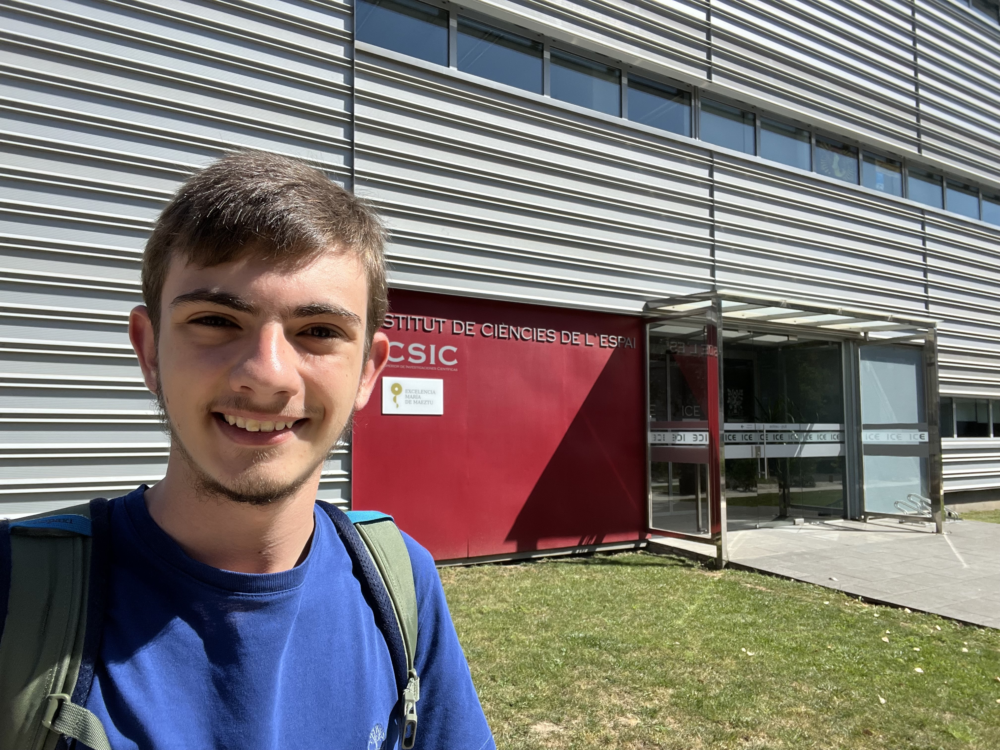

Welcome!
I'm Joan, a student from Barcelona with a passion for cosmology and high-energy astrophysics. You can explore my projects, view my CV, and learn more about my career journey below. Feel free to reach out!
Highlights
-
Interview at local radio station (at 2h :10 min)
-
News on the spanish participants in Jugend Forscht NWR (Düsseldorf '24) at DSIB
-
Research stay at ICE-CSIC:

-
LinkedIn
→ See more at my projects site.